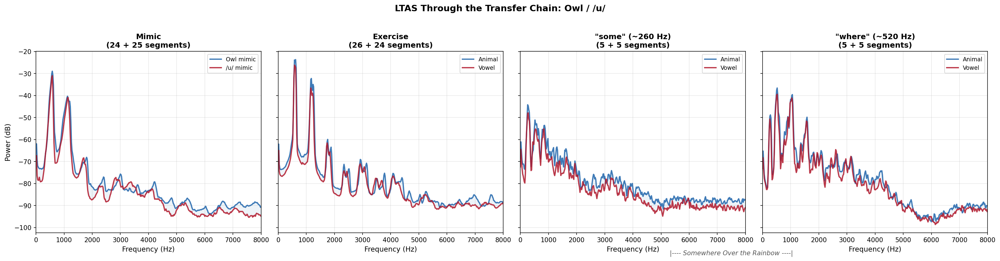
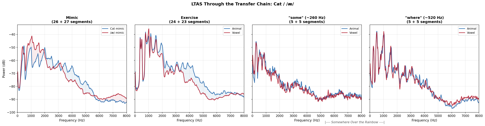
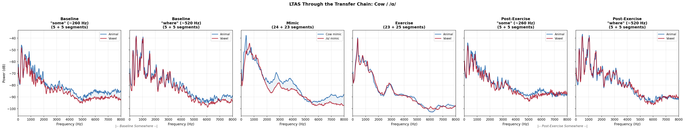
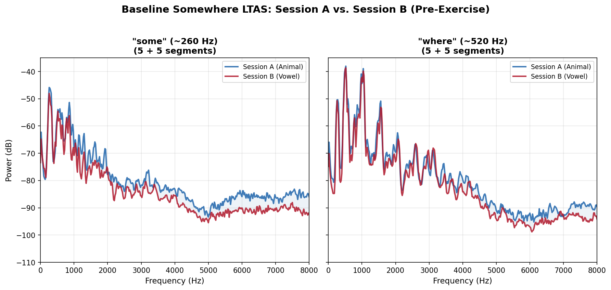
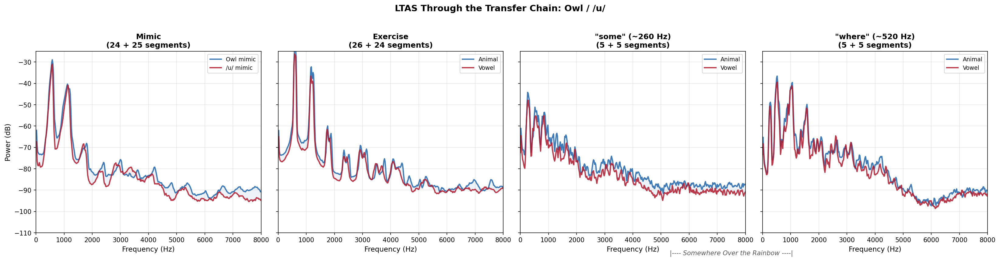
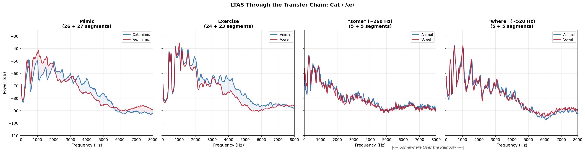
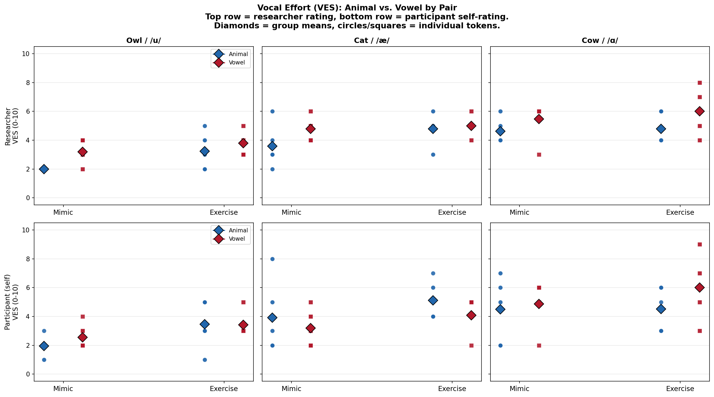

/var/folders/8k/0sy6mzyd2rz91y2d22bmj5l40000gq/T/ipykernel_24767/2489717195.py:27: DeprecationWarning:
Support for the 'engine' argument is deprecated and will be removed after September 2025.
Kaleido will be the only supported engine at that time.
Animal and Phoneme Mimic Exercises and Singing Voice Quality
acoustic-analysis
voice-quality
vocal-exercises
MFA-2026
Abstract
This study compares vocal exercises derived from animal imitations (owl, cat, cow) with exercises derived from the corresponding vowel imitations (/u/, /ae/, /a/) to investigate how each affects singing voice quality. Five participants each completed two sessions: one animal-based, one vowel-based. Acoustic measures were extracted from mimics, exercises, and a target song (“Somewhere Over the Rainbow”) recorded at baseline and after each exercise block. Perceptual effort was rated using the Omni-VES, and post-session engagement questionnaires captured participant experience.
Three research questions structure the analysis: (1) Do animal-derived exercises differ acoustically from vowel-derived exercises, and does that difference transfer into the exercise phase and carry over into singing? (2) How do the two exercise protocols affect overall voice quality and perceived vocal effort? (3) How do participants experience and engage with each exercise protocol?
The central finding is that each animal-vowel pair works through a different acoustic mechanism: cow changes acoustic measures associated with phonation, cat changes resonance, owl changes intensity. These signatures partially transfer from mimics into exercises, and the type of exercise (not cumulative warm-up) predicts the acoustic profile of subsequent singing. Neither protocol harms voice quality. Both protocols are moderately engaging, with no meaningful difference in overall engagement between them.
This is a proof-of-concept study with five participants. Effect sizes are large but confidence intervals are wide. The findings describe these five singers and identify patterns for future replication, not generalizable claims.
Key Findings
RQ1: Acoustic Comparison
| Finding | Confidence | Evidence |
|---|---|---|
| The three animal-vowel pairs work through different acoustic mechanisms | High | Very large effect sizes (d > 2 for multiple measures across all three pairs), consistent within pairs |
| Animal mimics produce acoustically distinct vocalizations vs. vowel mimics | High | Every pair shows at least two measures with d > 1.5 |
| Exercises partially inherit the mimic’s acoustic signature | Moderate | Transfer is real but attenuated and pair-dependent; Cat spectral features transfer best |
| Cat/æ priming changes the exercise and carries over to the song | High | Spectral SD d = +3.71 (exploratory p = .001) at exercise stage; H1-H2 d = +2.27 (exploratory p = .007) at Somewhere “where” target |
| Cow/ɑ priming changes exercise voice quality | High | Shimmer d = −1.74 (exploratory p = .018), jitter d = −1.40 (exploratory p = .035) at exercise; CPPS d = −1.88 (exploratory p = .014) carry-over |
| Owl/u priming does not change the exercise outcome | High | No measure exceeds |
| Carry-over into singing is exercise-type-specific, not dose-dependent | Exploratory | Cow/a exercises produce the most distinctive carry-over on Tier 1 measures; no temporal position correlation reaches significance |
| Cow H1-H2 diverges across exercise reps | Exploratory | Visible in trajectories but may be driven by 1-2 participants at n = 5 |
RQ2: Voice Quality and Perceived Effort
| Finding | Confidence | Evidence |
|---|---|---|
| Neither protocol harms overall voice quality | High | AVQI stable or improved pre-to-post in both conditions |
| The acoustic correlates of perceived effort are vowel-dependent | Moderate | Different acoustic dimensions predict VES for each vowel; no single “effort profile” across conditions |
RQ3: Participant Engagement
| Finding | Confidence | Evidence |
|---|---|---|
| Both protocols are moderately engaging, with no meaningful difference | High | Engagement Index: Session A M = 5.44, Session B M = 5.70, paired d = -0.21 |
| Slight trend toward higher likelihood of future use for vowel exercises | Exploratory | Likelihood Index d = -0.72 (medium effect), not significant at n = 5 |
| Participant #2 shows consistently low engagement across both sessions | Descriptive | Lowest scores on both indices, active reluctance on reverse-coded item |
Study Design
Five participants each completed two recording sessions:
- Session A (Animal): Imitate an animal sound (owl, cat, cow) → sing a derived exercise → sing “Somewhere Over the Rainbow”
- Session B (Vowel): Imitate the corresponding vowel (/u/, /æ/, /ɑ/) → sing a derived exercise → sing “Somewhere Over the Rainbow”
Three animal-vowel pairs target different vowels and vocal behaviors:
| Pair | Animal | Vowel | Approximate f0 | Primary Domain |
|---|---|---|---|---|
| Owl / /u/ | Owl hoo | /u/ | ~570 Hz | Intensity, stability |
| Cat / /æ/ | Meow | /æ/ | ~430 Hz | Resonance, spectrum |
| Cow / /ɑ/ | Moo | /ɑ/ | ~320 Hz | Phonation, registration |
Each session also included AVQI recordings (sustained vowel + continuous speech) before and after the exercise protocol, “Somewhere Over the Rainbow” at baseline and after each of the three exercise blocks, and a post-session engagement questionnaire.
Analysis Method
Acoustic measures (20): f0 mean and SD, jitter (local), shimmer (local and dB), HNR, intensity (calibrated to 94 dB reference tone), spectral moments (CoG, spectral SD, skewness, kurtosis), CPPS, H1-H2, F1, F2, alpha ratio, L/H ratio, LTAS slope and tilt, AVQI.
Extraction was performed independently by two pipelines: a Praat batch script (Ian Howell) and a parselmouth-based Python pipeline. Results were cross-validated and merged into a single dataset (394 tokens x 35 measures). An independent statistical audit verified all claims. See the Audit Report for full details.
Perceptual measure: Omni-VES (Vocal Effort Scale, 0-10), rated by the researcher for every mimic and exercise segment. Participant self-ratings provide a second perspective.
Statistical approach: Cohen’s d with bootstrapped 95% confidence intervals (10,000 draws), Spearman rank correlations for VES-acoustic relationships, linear mixed models for condition and interaction effects. Emphasis on effect sizes and patterns over p-values given n = 5. Bootstrap stability analysis categorized effects into three robustness tiers.
Formant caveat: Formant estimation is unreliable when f0 exceeds ~350 Hz. Owl mimics (~570 Hz) and “where” targets (~520 Hz) are flagged; cat mimics (~430 Hz) are borderline; cow mimics (~320 Hz) and “some” targets (~260 Hz) are reliable. Formant-dependent findings should be interpreted with caution for high-f0 tokens.
Engagement questionnaires: Post-session Likert scales (10 items, 1-7; 3 likelihood items, 1-5) plus open-ended responses. Engagement Index is the mean of all 10 items (Q1_10 reverse-coded). Likelihood Index is the mean of the 3 future-use items. Paired Cohen’s d and paired t-tests for session comparison.
Results
RQ1: Acoustic Comparison of Traditional vs. Alternative Vocal Exercises
Do animal-derived exercises differ acoustically from vowel-derived exercises? Does that difference transfer into the exercise phase and carry over into singing?
The Transfer Chain: How Each Mimic Changes the Voice, the Exercise, and the Song
The strongest finding in this study: the three animal mimics do not all work the same way, and their effects transfer differently through the chain from mimic to exercise to song.
The heatmap below tracks within-participant paired effect sizes (Cohen’s d) across three stages. Blue = animal session produced a higher value; red = vowel session produced a higher value. Read left to right within each pair to see what persists, what fades, and what emerges. The last two columns (“some” and “where”) are not sequential steps; they are two register-specific views of the same song performance. “Some” captures the lower register (~260 Hz) and “where” captures the upper register (~520 Hz) within each “Somewhere Over the Rainbow” recording.
A note on paired d: These are within-participant comparisons where each singer serves as their own control. Paired d values are typically smaller than pooled d values (e.g., Cow HNR paired d = +2.56 vs. pooled d = +3.91) because they control for individual differences. The direction and interpretation are the same.
Reading the heatmap left to right by pair:
Cow / /251/: Voice quality differences (HNR d = +2.56, shimmer d = -1.31, jitter d = -1.35) that persist or strengthen at the exercise stage (shimmer d = -1.74, jitter d = -1.40) and reach the song (CPPS d = -1.88 on “some,” shimmer d = -1.19 on “where”). The cow mimic’s motor pattern (a whole-gesture registration traversal, not a steady-state vowel) seeds a voice quality difference that is still acoustically detectable in “Somewhere Over the Rainbow.” These measures are established correlates of vocal fold vibratory regularity (Ferrand, 2002; Teixeira et al., 2013).
Cat / /0e6/: Spectral differences that amplify in the exercise. Spectral SD grows from d = +2.11 (mimic) to d = +3.71 (exercise, the single largest effect in the dataset). The meow-primed exercise has nearly 50% more spectral spread than the /0e6/-primed exercise. Carry-over to the “where” target: H1-H2 d = +2.27 (animal-primed song is breathier), shimmer d = +1.34, intensity d = -1.39. This is the clearest evidence that the priming mimic affects the song.
Owl / /u/: Strong mimic differences (shimmer d = -2.95, spectral SD d = -2.13, intensity d = +1.96) that completely disappear by the exercise stage. No measure reaches |d| > 0.8 at exercise. The owl and /u/ prime the exercise the same way.
The pedagogical implication: Not all animal mimics add value over their vowel counterparts. Cat and cow introduce motor patterns the vowel alone does not, and those patterns can reach the song. Owl does not.
A note on interpreting Cow / /251/ measures
For the owl and cat mimics, each repetition is relatively steady-state. For the cow mimic and its /251/ counterpart, both involve pitch glides, vowel shifts from /251/ to /u/, and registration traversal. Acoustic measures for these tokens represent averages across the entire gesture. The comparison is between two different motor patterns, not two steady-state vowels.
Spectral Profiles Through the Chain
The LTAS (Long-Term Average Spectrum) figures show what the heatmap numbers look like acoustically, matching the heatmap’s four columns exactly. Each figure has four panels: Mimic, Exercise, and two register-specific views of “Somewhere Over the Rainbow” (“some” at ~260 Hz and “where” at ~520 Hz). The Song panels use pitch-conditioned LTAS: only the frames where the singer is in the target register contribute to the spectral average. Blue = animal session, red = vowel session. Where the curves separate, the conditions sound different. Where they converge, the difference has faded.

Owl / /u/: spectra nearly overlap at all stages. No spectral difference survives into Somewhere at either register.

Cat / /æ/: dramatic spectral divergence at mimic, partially visible at exercise. The “where” panel shows residual difference in the song.

Cow / /ɑ/: spectral divergence at mimic and exercise. The “some” panel shows the register where CPPS carry-over was detected.
Individual Participant Patterns
The heatmap shows group-level effects. The dot plots below show where each participant falls. Blue = animal session, red = vowel session. Diamonds = group means.

HNR: For Cow, all 5 participants show higher HNR in the animal condition at mimic. The gap narrows through the chain.

Shimmer: Owl shows a dramatic split at mimic that disappears at exercise. Cow shows persistent separation.

H1-H2: Cow H1-H2 grows from near-zero at mimic to a visible split at exercise (phonation type difference emerging).
RQ2: Voice Quality and Perceived Effort Outcomes
How do the two exercise protocols affect overall voice quality (AVQI) and perceived vocal effort (Omni-VES)?
VES Ratings by Exercise Type
The Omni-VES (Vocal Effort Scale) was rated by the researcher for every mimic and exercise segment. Participant self-ratings provide a second perspective. The box plots below show the distribution of VES ratings across all six exercise types (three animal, three vowel). Higher VES scores indicate more perceived vocal effort.
/var/folders/8k/0sy6mzyd2rz91y2d22bmj5l40000gq/T/ipykernel_24767/2489717195.py:27: DeprecationWarning:
Support for the 'engine' argument is deprecated and will be removed after September 2025.
Kaleido will be the only supported engine at that time.
The VES gradient tracks vocal effort as expected: cow/ɑ (the most demanding pair — registration traversal, vocal fry, high pitch variability) consistently receives the highest effort ratings, while owl/u (the easiest — stable, projected, spectrally narrow) receives the lowest. Researcher ratings are higher and more gradient than self-ratings.
This confirms the VES is doing its job — capturing the degree of vocal effort required by each task. The more interesting question is which acoustic dimensions map onto perceived effort, and whether that mapping is consistent across vowel contexts (see VES–Acoustic Correlations below).
Source: Ian Howell, Analysis Advisor
Researcher vs. Participant VES: Who Perceives More Effort?
When comparing animal mimics to their vowel counterparts, the researcher and participants tell different stories:
| Pair | Researcher (animal, vowel) | Participant (animal, vowel) |
|---|---|---|
| Owl | 2.0, 3.2 | 2.0, 2.6 |
| Cat | 3.6, 4.8 | 3.9, 3.2 |
| Cow | 4.6, 5.5 | 4.5, 4.9 |
The researcher consistently rated vowel mimics as more effortful than animal mimics across all three pairs. The participants did not always agree: for Cat, participants rated the animal mimic (meow) as more effortful than the vowel (/æ/), flipping the researcher’s direction entirely.
A possible explanation: the researcher is rating what she observes about vocal effort and ease of production. The singers may be rating overall task difficulty, which includes the novelty and unfamiliarity of the animal mimics. The meow feels “harder” to the singer not because it is vocally more effortful, but because it is a less familiar motor pattern.

What Predicts Perceived Vocal Effort?
The heatmap below shows Spearman correlations between Omni-VES ratings and each acoustic measure, broken out by vowel group. The “all” column pools all vowel contexts; the individual columns show within-vowel relationships.
/var/folders/8k/0sy6mzyd2rz91y2d22bmj5l40000gq/T/ipykernel_24767/2489717195.py:27: DeprecationWarning:
Support for the 'engine' argument is deprecated and will be removed after September 2025.
Kaleido will be the only supported engine at that time.
The pooled correlations (“All” column) show a pattern that requires explanation: more shimmer and jitter correlate positively with higher VES scores, while HNR correlates negatively. This is a between-vowel confound: the cow pair, which produces higher perturbation and lower HNR, also requires the most vocal effort. More demanding tasks naturally produce both higher perturbation and higher effort ratings.
Within vowels, the story changes:
- For /ɑ/: Shimmer (ρ = +0.50) and HNR (ρ = −0.50) still correlate with VES, but CPPS and H1-H2 also appear. Breathier phonation and lower cepstral prominence associate with higher perceived effort.
- For /æ/: Skewness, kurtosis, and intensity are the strongest predictors. Less spectral complexity associates with higher perceived effort.
- For /u/: The pattern partially reverses. HNR is positively correlated with VES, opposite to the pooled direction. LTAS tilt is the strongest predictor.
The key finding is not that VES tracks effort (it’s designed to) but that the acoustic correlates of perceived effort are vowel-dependent. What predicts perceived effort differs by vowel context. There is no single acoustic profile that predicts perceived effort across all conditions. This has implications for how we evaluate vocal exercises: effort criteria should be vowel-appropriate, not one-size-fits-all.
The qualitative notes reinforce this: owl mimics receive consistently positive quality descriptions (“ease,” “lofted space,” “relaxed”) and correspondingly low effort ratings (researcher VES = 2 for 4 of 5 participants). Cow mimics receive notes about strain and effortful production and correspondingly high effort ratings. The VES and the qualitative observations agree: both capture effort, through different lenses.
| Pair | Typical Researcher VES | Quality Language |
|---|---|---|
| Owl / /u/ | 2 | “none to be heard” [strain], “good mimicry,” “release and ease” |
| Cat / /æ/ | 3–4 | “twang/ping” alongside “pressing,” “constriction” |
| Cow / /ɑ/ | 4–6 | “vocal fry,” “pressing,” “registration breaks” |
AVQI Pre/Post
The Acoustic Voice Quality Index (AVQI) was measured from sustained vowel + continuous speech recordings before and after each session. Neither protocol harms overall voice quality.
/var/folders/8k/0sy6mzyd2rz91y2d22bmj5l40000gq/T/ipykernel_24767/2489717195.py:27: DeprecationWarning:
Support for the 'engine' argument is deprecated and will be removed after September 2025.
Kaleido will be the only supported engine at that time.
AVQI values are stable or slightly improved pre-to-post in both conditions. No participant shows a clinically meaningful worsening. This means neither the animal nor the vowel exercise protocol introduces vocal strain or degradation at the whole-voice level — an important baseline finding even if AVQI is too blunt an instrument to capture the fine-grained acoustic shifts documented above.
Note: P4 Session B (Vowel) post-AVQI was not available.
RQ3: Participant Engagement
How do participants experience and engage with each exercise protocol? Post-session engagement questionnaires were administered after each session. All five participants completed both questionnaires.
/var/folders/8k/0sy6mzyd2rz91y2d22bmj5l40000gq/T/ipykernel_24767/2489717195.py:27: DeprecationWarning:
Support for the 'engine' argument is deprecated and will be removed after September 2025.
Kaleido will be the only supported engine at that time.
Engagement Index
The Engagement Index is the mean of 10 Likert items (1-7 scale): nine positively framed items (e.g., “I found today’s warm-ups engaging,” “I felt physically comfortable”) plus one reverse-coded item (“I would prefer not to use these kinds of warm-ups again”). Higher scores indicate greater engagement.
| Participant | Session A (Animal) | Session B (Vowel) | Difference |
|---|---|---|---|
| P1 | 6.22 | 6.60 | -0.38 |
| P2 | 4.60 | 3.30 | +1.30 |
| P3 | 5.70 | 5.90 | -0.20 |
| P4 | 6.50 | 6.40 | +0.10 |
| P5 | 4.20 | 6.30 | -2.10 |
Session A mean: 5.44 (SD = 1.01). Session B mean: 5.70 (SD = 1.37). Paired Cohen’s d = -0.21 (negligible). There is no meaningful difference in overall engagement between the two protocols.
Likelihood of Future Use
Three items rated on a 1-5 scale: likelihood of using these exercises in independent practice, before singing in front of others, and when unsure about vocal breaks.
| Participant | Session A (Animal) | Session B (Vowel) | Difference |
|---|---|---|---|
| P1 | 3.00 | 3.00 | 0.00 |
| P2 | 1.00 | 1.00 | 0.00 |
| P3 | 2.67 | 3.00 | -0.33 |
| P4 | 4.00 | 4.67 | -0.67 |
| P5 | 2.33 | 4.33 | -2.00 |
Session A mean: 2.60. Session B mean: 3.20. Paired Cohen’s d = -0.72 (medium effect favoring Session B). The trend is driven mainly by P5; three participants showed no or negligible difference.
Participant #2: Consistently Low Engagement
P2 stands out across both sessions: lowest Engagement Index (4.60 and 3.30), lowest Likelihood scores (1.00 for both, the floor), and active reluctance on the reverse-coded item. Open-ended responses reveal the reason: “I don’t understand how these sounds correlate to the song, so the connective tissue was a bit difficult for me to grasp” (Session A) and “I did not find that the warm-ups helped my singing much” (Session B). P2’s low engagement likely reflects a participant-level factor (task comprehension, physical state) rather than a protocol-specific issue.
Open-Ended Themes
All five participants completed both sessions, so the comparisons below reflect the same singers responding to different exercise protocols.
What helped? After the animal session, participants described effects in terms of registration and access: “warm up my break, opened my access to switch between my head and chest voice” (P4), “explored many parts of singing and also challenged my brain” (P1). After the vowel session, they described effects in terms of smoothness: “The slideness of it, it made me focus on engagement and access to my range” (P5), “The slides were helpful for the note leaps in the song” (P3).
What didn’t work? The most common theme across both sessions was confusion about vocal fry and task instructions: “I didn’t know if we were supposed to imitate the animal or just do the same sound in my tone” (P5, Session A), “the song is high, and we were working a lot on vocal fry, which just tired my voice out” (P2, Session B).
If you could change one thing? After the animal session, participants wanted more connection to the song. After the vowel session, they wanted more time and range exploration.
Perceived Effort and Engagement: A Cross-RQ Pattern
Across both sessions, higher VES ratings (more perceived effort) are associated with lower engagement and lower likelihood of future use. The within-session Spearman correlations are consistently negative:
| Comparison | r_s | p |
|---|---|---|
| Session B: Likelihood vs. participant VES | −0.72 | .17 |
| Session A: Likelihood vs. researcher VES | −0.70 | .19 |
| Session B: Engagement vs. researcher VES | −0.60 | .29 |
None reach significance at n = 5 (all p-values are exploratory), but the direction is consistent across all 8 comparisons tested. Additionally, participants whose self-rated VES was relatively lower in the animal session were more likely to prefer animal exercises for future use (r_s = +0.67, exploratory p = .22).
This pattern connects RQ2 to RQ3: the animal mimics produce less observed vocal effort (per the researcher), and both protocols produce comparable engagement. The slight likelihood advantage for vowel exercises may reflect the singers’ experience of novelty-as-difficulty rather than vocal effort per se.
Detailed Results
Supporting analyses and supplementary detail. The core findings above tell the complete story; the sections below provide depth for readers who want it.
Carry-Over by Preceding Exercise Type
The Somewhere probes above are labeled Post-Ex 1, Post-Ex 2, Post-Ex 3, but these numbers refer to the exercise type (1 = owl/u, 2 = cat/ae, 3 = cow/a), not the temporal order. The actual sequence of exercises was randomized per participant and session. This means we can ask: does the preceding exercise type predict the direction and magnitude of change in the subsequent Somewhere probe?
The figures below show mean change from baseline for each acoustic measure, grouped by which exercise was performed immediately before the Somewhere probe. Because the order was randomized, exercise-type effects can be partially separated from cumulative warm-up (dosage) effects.
/var/folders/8k/0sy6mzyd2rz91y2d22bmj5l40000gq/T/ipykernel_24767/2489717195.py:27: DeprecationWarning:
Support for the 'engine' argument is deprecated and will be removed after September 2025.
Kaleido will be the only supported engine at that time.
Animal Condition
In the animal condition, the cow/a exercises produce the most distinctive carry-over pattern on Tier 1 measures (those that survived every robustness test in the audit):
- Jitter: Cow produces a tight cluster of near-zero changes (mean change +0.0002), while owl and cat produce wider spread. The variability across exercise types (spread d = 0.89) is larger than typical within-group variability.
- f0 SD: Cow is associated with reduced pitch instability (mean change -2.35 Hz), while cat and owl show less consistent patterns (spread d = 1.26).
- HNR: Cow-preceded probes show the largest HNR increase (+1.45 dB on “some”), consistent with cow’s phonation-domain acoustic signature.
Vowel Condition
The vowel condition (Session B) shows smaller and less consistent differences across exercise types. No single exercise type dominates, and the error bars overlap substantially. This is consistent with the overall finding that the animal mimics produce more acoustically distinct effects than their vowel counterparts.
Temporal Position vs. Exercise Type
Because the exercise order was randomized, we can test whether changes correlate with temporal position (1st, 2nd, or 3rd exercise block) rather than exercise type. No Spearman correlation between temporal position and acoustic change reaches statistical significance in any condition-target-measure combination. This means the patterns above reflect what the singer just did (motor priming from the specific exercise), not how long they have been exercising (cumulative warm-up).
This is a meaningful distinction for pedagogy: it suggests that each exercise primes specific articulatory and phonatory patterns, and the most recent priming is what gets captured in the subsequent singing. The carry-over is exercise-specific, not dose-dependent.
Rep-by-Rep Trajectories
Exercises are not static across repetitions. The plots below track five key measures across 3-6 reps for each pair, showing individual participant lines (thin) and group means (thick). The animal-derived exercise is shown in solid lines; the vowel-derived exercise in dashed lines.
/var/folders/8k/0sy6mzyd2rz91y2d22bmj5l40000gq/T/ipykernel_24767/2489717195.py:27: DeprecationWarning:
Support for the 'engine' argument is deprecated and will be removed after September 2025.
Kaleido will be the only supported engine at that time.
/var/folders/8k/0sy6mzyd2rz91y2d22bmj5l40000gq/T/ipykernel_24767/2489717195.py:27: DeprecationWarning:
Support for the 'engine' argument is deprecated and will be removed after September 2025.
Kaleido will be the only supported engine at that time.
/var/folders/8k/0sy6mzyd2rz91y2d22bmj5l40000gq/T/ipykernel_24767/2489717195.py:27: DeprecationWarning:
Support for the 'engine' argument is deprecated and will be removed after September 2025.
Kaleido will be the only supported engine at that time.
/var/folders/8k/0sy6mzyd2rz91y2d22bmj5l40000gq/T/ipykernel_24767/2489717195.py:27: DeprecationWarning:
Support for the 'engine' argument is deprecated and will be removed after September 2025.
Kaleido will be the only supported engine at that time.
/var/folders/8k/0sy6mzyd2rz91y2d22bmj5l40000gq/T/ipykernel_24767/2489717195.py:27: DeprecationWarning:
Support for the 'engine' argument is deprecated and will be removed after September 2025.
Kaleido will be the only supported engine at that time.
The most striking trajectory is Cow H1-H2: the cow-derived exercise becomes breathier across repetitions (H1-H2 increases) while the /ɑ/-derived exercise becomes more pressed (H1-H2 decreases). This divergence suggests that the motor learning happening across repetitions is itself condition-dependent — the animal mimic seeds a vocal pattern that evolves as the singer repeats the exercise.
Other observations: - Cat H1-H2 shows parallel downward trends — both conditions become more pressed, but the cat-derived exercise starts from a higher baseline. - Alpha ratio diverges for Cow but not for Cat or Owl, consistent with Cow’s effect on acoustic measures associated with phonation. - Jitter is generally stable across reps, with the animal condition lower (less perturbed) for Cow and Owl.
Qualitative Observations
The researcher (Morgan) recorded observations on strain/tension, breath support, resonance/placement, and general impressions for every segment across all 10 sessions. These observations ground the acoustic findings in the language voice teachers actually use.
Themes by Animal-Vowel Pair
Owl / /u/ — “Ease,” “lofted space,” “relaxed”
The owl mimic consistently elicited the most positive quality language. Descriptions include: “none to be heard” (re: strain), “a good amount of release and ease,” “good lofted, back mouth space,” and “all four reps are very similar in timbre, pitch, breath control.” The owl exercises continued this pattern: “still sounded easeful,” “relatively free, easy, relaxed vibrato and breath.” Acoustically, this maps to low perturbation, high intensity, and spectrally narrow output.
Cat / /ae/ — “Twang/ping,” “pressing,” “constriction”
The cat mimic produced mixed observations: positive resonance features alongside effortful production: “some good ping starting to develop” but also “some tightness potentially around the larynx/pharynx” and “some pharyngeal constriction.” Multiple participants naturally produced an /m/ onset, reflecting the natural onset of “meow.” Acoustically, this maps to high spectral SD, high CoG, and high F2.
Cow / /a/ — “Vocal fry,” “pressing in fry,” “registration breaks”
The cow mimic is defined by registration traversal: chest voice through fry into head voice. Notes consistently flag: “some strain in the fry/chest,” “brightness in the chest/warmth in the head, not much connection throughout,” and “fry to M2 to fry.” This maps to the HNR/f0 SD/perturbation pattern, and the H1-H2 divergence across reps.
“Somewhere” Trajectory — What the Listener Heard
Despite noisy group-level acoustic data, the researcher consistently perceived progressive improvement:
- P1: Baseline “some adduction issues” → Post-Cow “less overall tension, better phrasing, more focus and ping, seems to be an improvement in overall function”
- P2: Baseline “some slight strain on ascending leaps” → Post-Cow “much more ease in transition areas, the connection between the larger leaps were very successful”
- P4: Baseline “slight strain on ascending leaps” → Post-Cow “the least amount of strain yet! Registration is connected, best take yet!”
- P5: Baseline “excessive airy quality due to hypofunction” → Post-Cat “we can hear the mechanism making adjustments here in real time”
Both protocols appear to warm up the voice and build coordination. The kind of improvement may differ: the animal session developing more M2 access and registration connection, the vowel session developing more breath flow and release.
Limitations
- Sample size (n = 5): Effect sizes are unstable, confidence intervals wide. Findings describe these five singers, not a generalizable population.
- Order effects: All participants completed Session A (animal) before Session B (vowel). Condition effects cannot be fully separated from session-order effects.
- Formant reliability: Unreliable at f0 > 350 Hz. Owl mimics (~570 Hz) and “where” targets (~520 Hz) are flagged; formant-dependent findings should be interpreted with caution for high-f0 tokens.
- Single rater: VES rated by one researcher without inter-rater reliability assessment.
- VES scale comprehension (P5): Participant 5 reported difficulty interpreting the Omni-VES numerical rating system, noting that the pictorial anchors provided more clarity. The researcher’s own VES ratings for P5 were consistently higher than P5’s self-ratings, suggesting possible underreporting of perceived effort due to scale confusion.
- Missing AVQI data (P4 Session B): The post-session AVQI recording (sustained vowel and continuous speech) was not collected for Participant 4 in Session B. All other pre/post AVQI recordings are complete and show stable voice quality across conditions.
- Carry-over analysis: Exercise-type effects on subsequent singing are descriptive (n = 5 per group, no inferential tests reach significance). They suggest hypotheses for replication, not confirmatory claims.
- Engagement questionnaire design: Session A included two animal-specific open-ended questions that Session B did not. The Likert items were identical across sessions.
Acknowledgments
This analysis was developed collaboratively with Claude (Anthropic) under the direction of Kayla Gautereaux. All analytical decisions were made by the research team. Acoustic analysis used Praat (Boersma & Weenink); statistical analysis and visualization used Python (pandas, scipy, plotly).